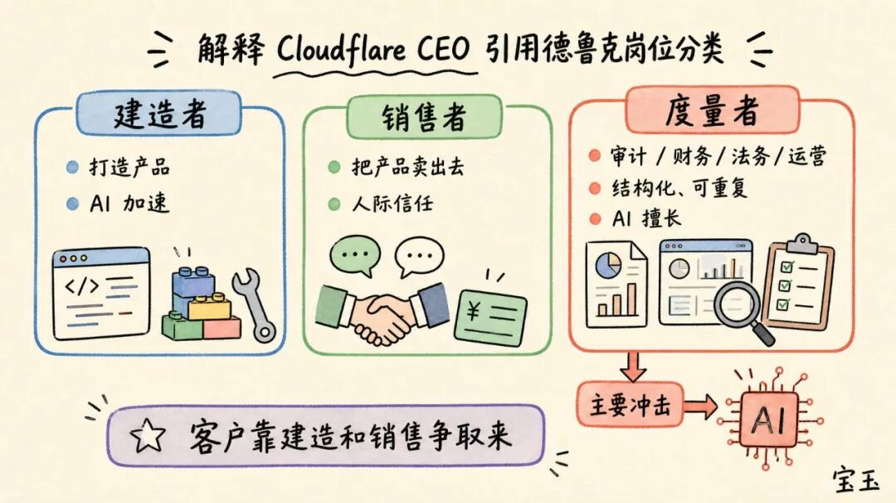
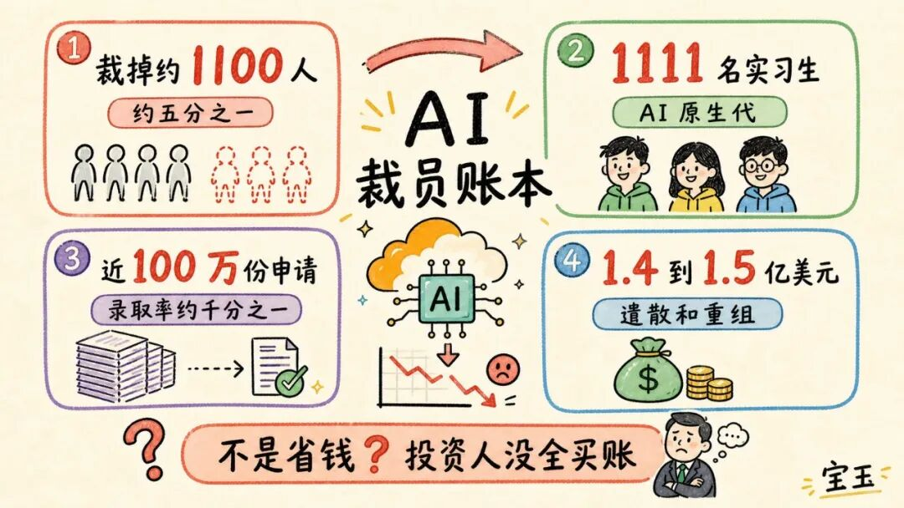
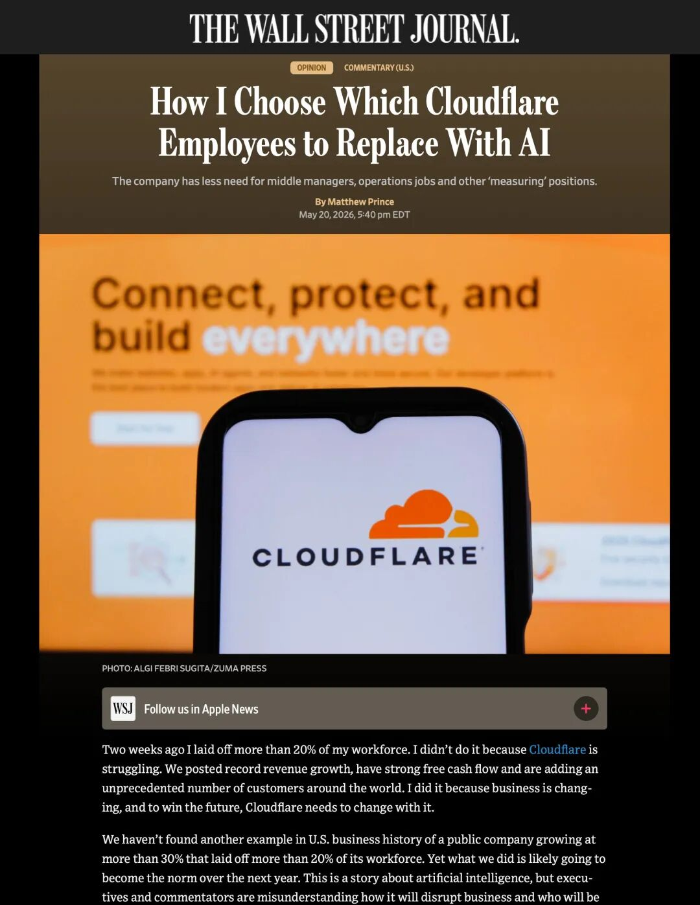

💡 谁将被 AI 淘汰？来自 Cloudflare CEO 的裁员抉择
Who Will Be Eliminated by AI? Cloudflare CEO's Layoff Decision
Cloudflare CEO Matthew Prince 在《华尔街日报》发了一篇专栏column[ˈkɒləm] n. 专栏，标题是：《我是如何决定用 AI 取代哪些 Cloudflare 员工的》
Cloudflare 刚裁掉约 1100 人，占全员五分之一，是这家公司 16 年来第一次大规模裁员layoff[ˈleɪɒf] n. 裁员。然后 Cloudflare 今年招了 1111 名实习生intern[ˈɪntɜːn] n. 实习生，基本上和裁员的人数相当，等于是腾笼换鸟了。
而且夸张的是，Cloudflare 今年收到了将近 100 万份实习申请application[ˌæplɪˈkeɪʃn] n. 申请，录取率只有千分之一，就业环境可见一斑，也难怪毕业典礼上 CEO 们吹 AI 下面嘘声一片！
为了说清楚裁员的理由rationale[ˌræʃəˈnɑːl] n. 理由；依据，Prince 搬出了管理学家彼得·德鲁克 1954 年的《管理的实践》，把公司里的人分成三类：
3. 以及“度量者”（measurer），负责其余一切，包括财务、审计、法务、合规compliance[kəmˈplaɪəns] n. 合规；遵守法规、中层管理、运营、市场。

AI 不动前两类。工程师engineer[ˌendʒɪˈnɪə(r)] n. 工程师效率翻十倍，他说有多少招多少；销售也安全，因为掏钱的是人，人愿意跟懂自己需求demand[dɪˈmɑːnd] n. 需求的人打交道。
会被 AI 顶掉的是第三类“度量者”，因为他们做的统计业绩、出报表、跑审计，正是结构化structured[ˈstrʌktʃəd] adj. 结构化的、可重复、AI 最擅长的活。这次裁的，绝大多数majority[məˈdʒɒrəti] n. 大多数就是这批人。
他举了几个具体例子：Cloudflare 的内部审计以前每个季度只能抽查几个业务风险领域，现在转向全业务持续continuous[kənˈtɪnjuəs] adj. 持续的审计；财务关账更快了，错误error[ˈerə(r)] n. 错误更少了；中层管理者manager[ˈmænɪdʒə(r)] n. 管理者被大幅裁减，因为 AI 让每个经理可以直接管更多人。
而且用来替代substitute[ˈsʌbstɪtjuːt] v. 替代；取代这些人的实习生，Matthew Prince 的话来说：是天生的 AI 原生代。他们无一例外，全都是“建造者builder[ˈbɪldə(r)] n. 建造者”或者“销售者”。
财报和裁员一起公布后，Cloudflare 股价stock[stɒk] n. 股票；股价一度跌掉二十多个百分点；公司这一季其实还亏了 6200 万美元，光遣散和重组restructuring[ˌriːˈstrʌktʃərɪŋ] n. 重组就要花 1.4 到 1.5 亿美元。一边说不是省钱，一边背着上亿重组开支，投资人investor[ɪnˈvestə(r)] n. 投资者显然没全买账。

-----以下为原文翻译------
《我是如何决定用 AI 取代displace[dɪsˈpleɪs] v. 取代哪些 Cloudflare 员工的》
两周前，我裁掉了公司超过 20% 的员工employee[ɪmˈplɔɪiː] n. 员工。我这么做并不是因为 Cloudflare 陷入了困境plight[plaɪt] n. 困境；艰难处境。恰恰相反，我们的营收增长创下了历史新高，现金流十分充裕，而且我们在全球范围内新增客户的数量也达到了前所未有unprecedented[ʌnˈpresɪdentɪd] adj. 前所未有的的水平。我做出这个决定，是因为商业环境正在发生剧变upheaval[ʌpˈhiːvl] n. 剧变；动荡；而为了赢下未来，Cloudflare 必须顺势而为adapt[əˈdæpt] v. 适应；顺应形势。
翻遍美国商业史，你可能都找不到第二家像我们一样、在保持 30% 以上高增长growth[ɡrəʊθ] n. 增长的同时还裁员 20% 的上市公司。然而，我们在过去两周的做法，很可能在未来一年里变成整个行业的常态norm[nɔːm] n. 常态；标准。这是一个关于人工智能（AI）如何重塑reshape[ˌriːˈʃeɪp] v. 重塑一切的故事，但遗憾的是，许多高管和评论员都误解了 AI 到底会如何颠覆商业规则，以及究竟谁会受到冲击。
为了搞清楚这个问题，我重新翻开了一本 1954 年出版的老书（这书比我还要大 20 岁）：彼得·德鲁克 (Peter Drucker，被誉为“现代管理学management[ˈmænɪdʒmənt] n. 管理学之父”) 的《管理的实践》。在这本书里，德鲁克深入剖析dissect[dɪˈsekt] v. 剖析；仔细分析了企业内部形形色色的岗位角色。我把这些角色归纳categorize[ˈkætəɡəraɪz] v. 归类为三类：建造者（builders）、销售者（sellers）和衡量者（measurers）。
顾名思义，“建造者”负责打造产品product[ˈprɒdʌkt] n. 产品，“销售者”负责把产品卖出去。而“衡量者”则包揽了剩下的一切：内部审计、收入确认 (revenue recognition，财务术语，指根据会计准则确认一笔销售何时能正式计入公司账面收入的流程)、财务、法务、合规、中层管理、日常运营operations[ˌɒpəˈreɪʃnz] n. 运营等等，不胜枚举。
与一些分析师的悲观pessimistic[ˌpesɪˈmɪstɪk] adj. 悲观的预测恰恰相反，“建造者”们的饭碗稳得很，哪里也不会去。如果我团队里的某个工程师现在的生产力productivity[ˌprɒdʌkˈtɪvəti] n. 生产力能借由 AI 翻上十倍，那我绝对会把市面上能找到的这种人才全都招进公司。
“销售者”同样不用担心被淘汰eliminate[ɪˈlɪmɪneɪt] v. 淘汰。因为掌握预算budget[ˈbʌdʒɪt] n. 预算的依然是活生生的人类，他们更愿意从那些愿意花时间倾听需求、能建立信任、并且能在出问题时帮忙兜底的人手里买东西。
“衡量者”对企业同样至关重要crucial[ˈkruːʃl] adj. 至关重要的，但他们与前两者截然不同。顶尖elite[ɪˈliːt] adj. 顶尖的；精英的“衡量者”往往千金难求。他们在幕后backstage[ˌbækˈsteɪdʒ] n. 幕后不知疲倦地默默耕耘，不追求台前角色 (front-of-house role，就像餐厅里直接面对顾客的大堂服务员一样，指容易受到外界瞩目和表扬的岗位) 的鲜花与掌声；最理想的情况是，他们还能保持独立于公司其他部门的客观objective[əbˈdʒektɪv] adj. 客观的视角。德鲁克指出，衡量业务表现固然重要，但客户customer[ˈkʌstəmə(r)] n. 客户终究是靠“建造”和“销售”争取来的。一家真正顶级的公司，应该把最多的资源投资在这两个核心core[kɔː(r)] adj. 核心的职能上。
AI 的浪潮并不是冲着“建造者”或“销售者”来的，它真正瞄准target[ˈtɑːɡɪt] v. 瞄准；针对的是“衡量者”。不知疲倦tireless[ˈtaɪələs] adj. 不知疲倦的、绝对独立、极其高效且随时在线——如今的 AI 系统在衡量和审视一家公司时，其客观入微的细节和精准度，是过去哪怕最拔尖的员工也望尘莫及的。
拿 Cloudflare 来说，过去我们的内部审计团队每季度只能挑出几个业务风险risk[rɪsk] n. 风险点进行抽查。而现在，我们正在全面启用一套新系统system[ˈsɪstəm] n. 系统，对每一个业务风险点进行全天候的持续审计。我们财务accounting[əˈkaʊntɪŋ] n. 会计；财务结账 (closing our books，指企业在月末或年末结清账目、出具财务报表的常规流程) 的速度变得更快了。我们犯的错越来越少，即便偶有纰漏oversight[ˈəʊvəsaɪt] n. 疏忽；纰漏，也能被更精准可靠地揪出来。作为 CEO，我现在拥有了前所未有的绝佳工具，不仅能精确衡量公司的整体运营状况，还能帮我精准发掘identify[aɪˈdentɪfaɪ] v. 识别；发掘团队里冉冉升起的明日之星。
我们上周裁掉的员工personnel[ˌpɜːsəˈnel] n. 人员；员工中，绝大多数正是“衡量者”。我们精简streamline[ˈstriːmlaɪn] v. 精简了整个公司的中层管理人员，因为在 AI 的辅助下，主管们现在可以管理更多的直接下属，同时依然能对团队进行精准的绩效评估和有效指导。我们将分散的运营岗位整合integrate[ˈɪntɪɡreɪt] v. 整合进了一个统一的业务支持小组，遇到需要特定专业知识的场景，就让 AI 来填补空缺。我们还大幅裁减了市场营销marketing[ˈmɑːkɪtɪŋ] n. 市场营销团队——和大多数公司一样，那里曾经是“衡量者”扎堆的重灾区。此外，在整个财务团队中，我们也找到了大量合并岗位和实现自动化automation[ˌɔːtəˈmeɪʃn] n. 自动化的空间。
但是，这次裁员的根本目的绝不是为了单纯merely[ˈmɪəli] adv. 仅仅；单纯地地缩减人头。事实上，我们目前开放招聘的岗位position[pəˈzɪʃn] n. 职位；岗位数量创下了历史新高。我预计anticipate[ænˈtɪsɪpeɪt] v. 预期；预计在未来几年里，我们的员工总数将持续增长。正是因为“衡量”这项工作不再需要那么多人力，我们现在才能腾出手来，将重金砸向那些真正能驱动drive[draɪv] v. 驱动公司增长的人才。
今年夏天，我们收到了将近 100 万份简历resume[ˈrezəmeɪ] n. 简历，争夺 1,111 个带薪实习岗位。我们最终录用hire[ˈhaɪə(r)] v. 录用的这批实习生不仅极其优秀，更是天生的 AI 原生代 (AI-native，指伴随 AI 时代成长，天然适应并将 AI 视为思维方式和基础工具的新一代群体)。他们无一例外，全都是“建造者”或者“销售者”，我们预计expect[ɪkˈspekt] v. 预期；预计这其中的绝大多数人最终都会拿到全职 Offer。
他们是属于未来的新一代，将发明出全新的方式为我们的业务注入动力momentum[məˈmentəm] n. 动力；势头。得益于 AI，我们现在能更精准地衡量他们的贡献，并准确无误地找出那些未来的领袖leader[ˈliːdə(r)] n. 领导者人物。AI 绝不是导致年轻人惨淡失业的灾难前兆harbinger[ˈhɑːbɪndʒə(r)] n. 前兆——情况恰恰相反。
AI 不会终结terminate[ˈtɜːmɪneɪt] v. 终结；终止所有工作岗位，但它必定会重塑每一家企业。归根结底ultimately[ˈʌltɪmətli] adv. 归根结底；最终，时间会证明德鲁克是对的。AI 将极大地提升我们衡量组织的能力，这样一来，我们团队里活生生的人类，就能把全部精力倾注到他们真正能创造和捕获capture[ˈkæptʃə(r)] v. 捕获价值的地方：去建造，去销售。

https://apple.news/A9PjCwSfHTXiMDSF-Hj27_Q